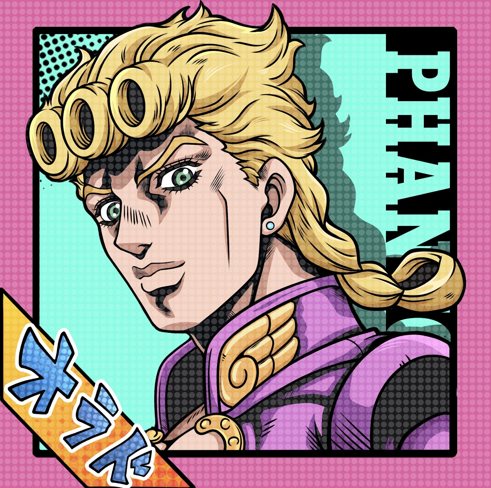

Focus
Autonomous driving inference, made efficient enough for real systems.
Model deployment, hardware acceleration, and system co-design shaped around practical performance.
Southeast University and Monash University

Zhaodong Lyu
Also known as Jordon, I work on FPGA and GPU acceleration for autonomous driving inference, embedded systems, and V2X co-optimization.
Focus
Model deployment, hardware acceleration, and system co-design shaped around practical performance.
Platforms
Algorithm acceleration, embedded design, and co-optimization across the stack.
Outside The Lab
A quieter archive of travel, cities, details, and atmosphere.
Academic
This section gathers the core of my academic work, from background and ongoing interests to selected publications and assistantship experience.
I am currently affiliated with Southeast University and Monash University. Before that, I received my B.S. in Communication Engineering from Hunan University in 2021 and my M.S. in Electrical Engineering from ShanghaiTech University in 2024.
My work focuses on making intelligent systems more efficient and deployable, especially for autonomous driving inference, FPGA and GPU acceleration, and V2X-oriented system co-optimization.
I am especially interested in research that connects algorithm design, hardware architecture, and end-to-end system performance.
01
Designing dataflow-friendly accelerators and deployment strategies that improve throughput, latency, and energy efficiency for edge intelligence.
02
Exploring practical acceleration techniques for end-to-end perception and planning pipelines on heterogeneous computing platforms.
03
Studying how communication, computation, and deployment decisions can be jointly optimized for collaborative intelligent transportation systems.
04
Contributing to a pure-digital embedded FPGA tapeout in TSMC 28HPC+, supported by an RTL generator workflow based on Fabulous eFPGA.
Selected Publication
Venue: IEEE ISCAS 2024
This work proposes an energy-efficient fall detection accelerator for ear-worn devices, combining compact feature extraction, lightweight neural design, and hardware-aware acceleration.
In Progress
This section is being updated as current projects move toward submission and publication.
2025
Term: Spring 2025 to Fall 2025
Focus: End-to-end self-driving algorithm acceleration.
2024 to 2025
Term: Fall 2024 to Spring 2025
Focus: Flaw detection on CPU-GPU platforms and digital eFPGA tapeout in TSMC 28HPC+.
Photography
A personal collection of travel and city photographs. You can filter the gallery by location theme and year, then open each image in the lightbox viewer.
Visual Notes
The collection moves through cities, travel, and quiet details. Less about volume. More about atmosphere.
Contact
If my work overlaps with your interests in efficient AI systems, embedded acceleration, or collaborative intelligent transportation, feel free to reach out.